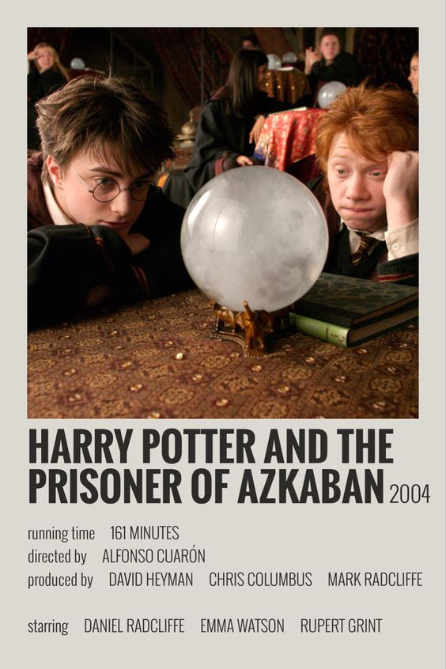

Nueva serie de Harry Potter

La obra cumbre de J.K. Rowling será objeto de una nueva adaptación,
aunque esta vez en forma de serie de televisión. Un proyecto ambicioso que se anunció oficialmente en 2023
para su debut en la plataforma de streaming HBO Max pero para la que todavía tendremos
que esperar. Toma nota de todo lo que sabemos sobre la serie de Harry Potter a continuación:
Harry Potter regresa a Cinépolis

Aunque Harry Potter fue lanzado hace más de 20 años, su legado sigue vigente, pues hasta la fecha no han
dejado de lanzar
mercancía y material nuevo de la saga. De hecho, hace poco se confirmó que están trabajando en una serie y
que los primeros
filmes serán estrenados nuevamente en cines de todo el mundo.
En México, ya se confirmó que tres de las películas del mago regresarán a la pantalla grande como parte de
las celebraciones
por su cumpleaños el próximo 31 de julio. Por lo que, si te gusta la saga ya puedes adquirir tus boletos a
través de la
preventa de Cinépolis en su sitio oficial.